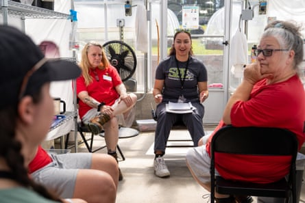
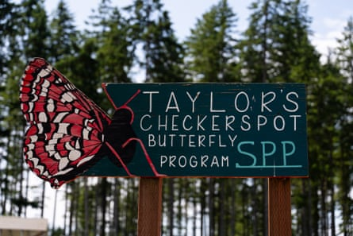
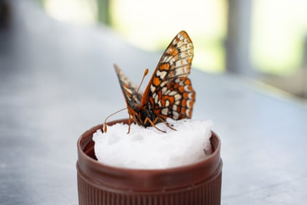
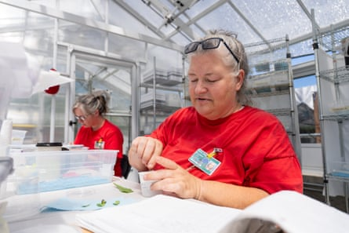

Trista Egli was standing in a greenhouse, tearing up strips of plantain and preparing to feed them to butterfly larvae.
Of the many things the team here has tried to tempt larvae of the Taylor’s checkerspot – a native of the Pacific north-west – with, it is the invasive English plantain they seem to love the most.
“The big thing for me is being part of an effort to save an endangered species,” says Egli, 36. “It is a big thrill.”
Egli is one of seven women incarcerated at the Mission Creek correctional facility, located a two-hour drive from Seattle, who are part of a year-long program that takes captured butterflies, harvests their eggs, and oversees the growth of the larvae before they are released into the wild where they will turn into adults.
‘The program at Mission Creek has been operating for 10 years.’Photograph: Washington State Department of Corrections
Last year, scientists working with the team released more than 67,000 larvae.
The adult butterflies live for just a handful of fabulous, wing-fluttering days.
The women working in the program are dressed in red sweaters – indicating they are outside the prison’s perimeter – rather than the usual prison garb of khaki pants and white shirts.
Many of the women speak of their pride working on a project that feels like it is making a positive contribution to the world.
Lynn Cheroff, 42, said she had been thrilled to talk about it with her two young children when they come to visit. When she telephones her mother about the work, her mother tells her she is proud.
‘The women working in the program are dressed in red sweaters – indicating they are outside the prison’s perimeter – rather than the usual prison garb of khaki pants and white shirts.’Photograph: Washington State Department of Corrections
Another woman, Jennifer Teitzel, appreciates the sense of order and discipline the program demands and instills.
Every detail about the eggs and larvae has to be collated and recorded. It is the women’s responsibility, and nobody else’s, seven days a week.
At the same time, while the program run by Washington state department of corrections (DOC), is part of an effort to prepare the women for life once their sentences are over and to smooth the path to work or college, there is no sugar-coating their predicament.
Egli, who has three young children, is serving a nine-year sentence for a 2020 drunken hit and run that left a woman with permanent brain damage.
“I am paying the price for that every day. I can never go back and undo what happened,” she says. “But I can try to make sure the rest of life is about making the world a better place.”
The program at Mission Creek has been operating for 10 years.
‘Last year, scientists working with the team released more than 67,000 larvae.’Photograph: Washington State Department of Corrections
Kelli Bush, the co-director of Sustainability in Prisons Project, a partnership between the DOC and Evergreen State College in Olympia, says a crucial component are graduate students who visit to offer educational support.
Bush says in addition to providing the women something to feel proud about as many deal with shame and guilt, the program also gives them confidence about their own capabilities.
“They reconnect with their own brilliance, they reconnect with their own intelligence,” she says. “It’s routine to hear people say ‘I didn’t think I was smart and I’m realising I’m doing science’. [With] hands-on learning and incorporating the academic components, pretty soon people find themselves reading peer-reviewed scientific journals and saying. ‘I can do this too.’”
The Taylor’s butterfly’s preferred habitat is open grasslands and prairie. For thousands of years, such landscapes were created and maintained by active burning by Indigenous communities.
Without such native stewardship, and with ever-increasing threats from developers and town planners, the amount of grassland has drastically diminished.
Today in the Pacific north-west, the butterfly is restricted to eight healthy populations in Washington state, two in Oregon and one in Canada’s British Columbia.
A favored place is Joint Base Lewis-McChord (JBLM), operated by the US army and situated 10 miles from Tacoma. Training with heavy artillery has long kept the prairie free of unwanted vegetation.
‘Today in the Pacific north-west, the butterfly is restricted to eight healthy populations in Washington state, two in Oregon and one in Canada’s British Columbia.’Photograph: Washington State Department of Corrections
Yet when the Taylor’s was added to the US Endangered Species Act list in 2013, it presented military officials with a challenge; how could they continue to make use of the base without harming a species now protected by federal law?
Dan Calvert, of the Sentinel Landscape Partnership, a coalition of federal and state groups that works with landowners to promote sustainable land use around military installations, says JBLM contains “90% of the prairie habitat in western Washington”.
He estimates the classification of the Taylor’s checkerspot means the military “cannot use half the base for about half the year”.
One of the efforts to boost the numbers of Taylor’s checkerspot in locations off-base – and thereby allow the military work unimpeded at the base – led to funding for the Mission Creek project by the Department of Defense (DoD).
“It’s this whole, big process with the DoD funding efforts to support the military mission of JBLM by creating off-base habitat to mitigate your on-base impact,” says Calvert.
‘Mission Creek is set to close in October because of budget cuts.’Photograph: Washington State Department of Corrections
The collaboration has helped boost the Taylor’s checkerspot. This year could be a record year for releases of adults. In 2024, the program released 67,100 larvae.
However, there’s a dark cloud looming over the program. Mission Creek is set to close in October because of budget cuts. There is a plan to transfer the women and the program to a jail at Gig Harbor, located 25 miles away, but there is some concern among current participants it could simply be cut entirely.
Egli, who is set to become eligible for a work-release program under which she would serve the last 18 months of her sentence working outside the jail and returning to do what’s known as a DOC re-entry facility every night, says the program changed the person she was.
She has been sober for four years, and says she is focused on the future and earning enough money to buy a home.
“At some point, I’d like to go back to college,” she says. “But I know I have to work hard and get some money before I can do that.”